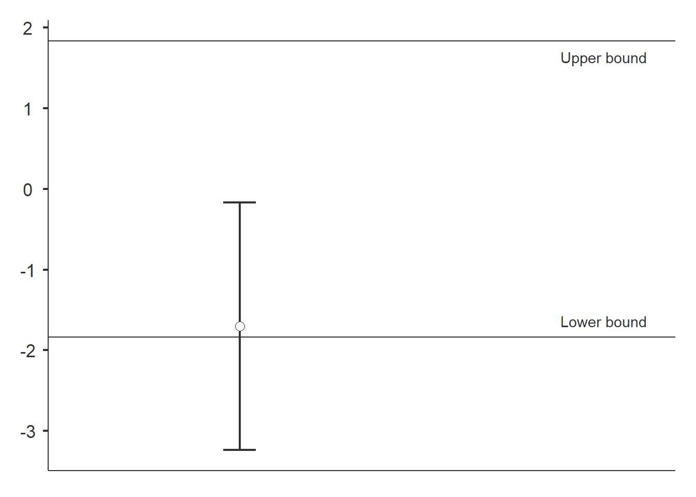
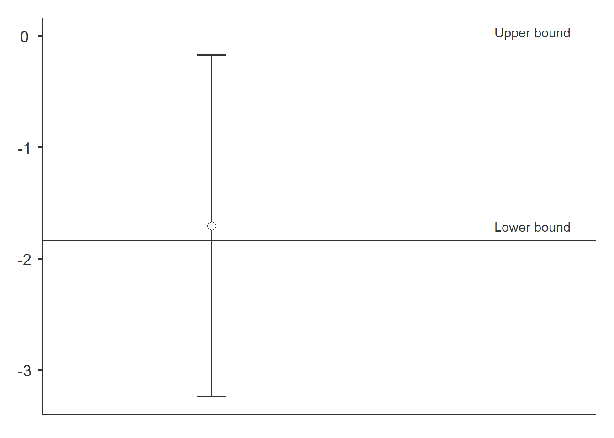
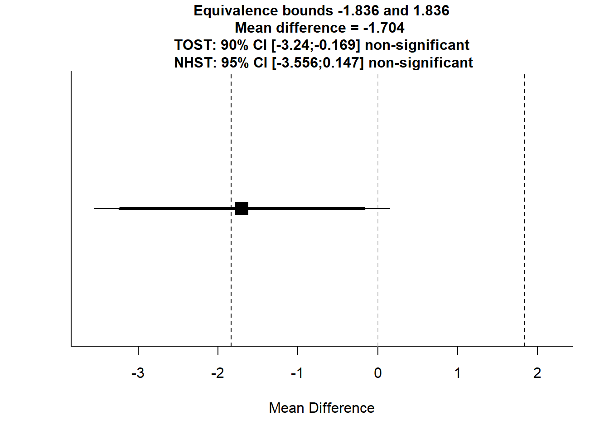

Install required packages from CRAN and GitHub.
install.packages(c('TOSTER', 'ecoCopula', 'mvabund', 'devtools', 'psych'))
devtools::install_github('lsjmichelle/ecopower@1e5d39a')
devtools::install_github('dwarton/ecostats')library(TOSTER)
library(ecopower)
library(ecoCopula)
library(mvabund)The crayweed dataset was collected over a period of seven time points and contains the counts of 34 fish species at 27 sites - 16 reference sites and 11 restored sites.
data('crayweed', package='ecopower')
abund = crayweed$abund
X = crayweed$Xdata = data.frame(richness = rowSums(abund>0))
data$treatment = X$treatment
data$treatment = factor(data$treatment, levels=c('restored', 'reference'))
head(data)## richness treatment
## 1 8 reference
## 2 5 restored
## 3 9 restored
## 4 15 reference
## 5 9 reference
## 6 12 restoreddataTOSTtwo(
data, deps='richness', group='treatment',
low_eqbound=-0.8, high_eqbound=0.8,
var_equal=TRUE, desc=TRUE, plots=TRUE
)##
## TOST INDEPENDENT SAMPLES T-TEST
##
## TOST Results
## ----------------------------------------------------------------
## t df p
## ----------------------------------------------------------------
## richness t-test -1.895899 25.00000 0.0695896
## TOST Upper -3.938410 25.00000 0.0002901
## TOST Lower 0.1466122 25.00000 0.4423070
## ----------------------------------------------------------------
##
##
## Equivalence Bounds
## -------------------------------------------------------------------------------
## Low High Lower Upper
## -------------------------------------------------------------------------------
## richness Cohen's d -0.8000000 0.8000000
## Raw -1.836360 1.836360 -3.240283 -0.1688077
## -------------------------------------------------------------------------------
##
##
## Descriptives
## --------------------------------------------------------------------
## N Mean Median SD SE
## --------------------------------------------------------------------
## restored 11 9.545455 11.00000 2.339386 0.7053514
## reference 16 11.25000 12.00000 2.265686 0.5664215
## --------------------------------------------------------------------
We do not find evidence of similarity. The confidence interval (CI) does not fall between the lower and upper bounds.
dataTOSTtwo(
data, deps='richness', group='treatment',
low_eqbound=-0.8, high_eqbound=Inf,
var_equal=TRUE, desc=TRUE, plots=TRUE
)##
## TOST INDEPENDENT SAMPLES T-TEST
##
## TOST Results
## -----------------------------------------------------------------
## t df p
## -----------------------------------------------------------------
## richness t-test -1.895899 25.00000 0.0695896
## TOST Upper -Inf 25.00000 < .0000001
## TOST Lower 0.1466122 25.00000 0.4423070
## -----------------------------------------------------------------
##
##
## Equivalence Bounds
## --------------------------------------------------------------------------
## Low High Lower Upper
## --------------------------------------------------------------------------
## richness Cohen's d -0.8000000 Inf
## Raw -1.836360 Inf -3.240283 -0.1688077
## --------------------------------------------------------------------------
##
##
## Descriptives
## --------------------------------------------------------------------
## N Mean Median SD SE
## --------------------------------------------------------------------
## restored 11 9.545455 11.00000 2.339386 0.7053514
## reference 16 11.25000 12.00000 2.265686 0.5664215
## --------------------------------------------------------------------
The result is inconclusive. To conclude that restored is not inferior to reference, the CI should be above the lower bound.
Our study lacks power at an effect size of 0.8.
powerTOSTtwo(alpha=0.05, N=14, low_eqbound_d=-0.8, high_eqbound_d=0.8)## The statistical power is 36.31 % for equivalence bounds of -0.8 and 0.8 .## ## [1] 0.3630618When designing an experiment, collecting more samples will improve the chances of detecting an effect size of interest.
powerTOSTtwo(alpha=0.05, statistical_power=0.8, low_eqbound_d=-0.8, high_eqbound_d=0.8)## The required sample size to achieve 80 % power with equivalence bounds of -0.8 and 0.8 is 27 per group, or 54 in total.## ## [1] 26.76202
TOSTER allows us to combine equivalence test and classical test. To do so, we require some descriptive statistics. There are many ways to compute these statistics. Here we use the psych package to display the descriptive statistics in a table.
psych::describeBy(
richness~treatment, mat=TRUE, digits=4, data=data
)[,c('group1', 'n', 'mean', 'sd')]## group1 n mean sd
## X11 restored 11 9.5455 2.3394
## X12 reference 16 11.2500 2.2657Then we input the values into the TOSTtwo function.
TOSTtwo(
m1=8.9091, m2=9.9375,
sd1=2.0226, sd2=1.6919,
n1=11, n2=16,
low_eqbound_d=-0.8, high_eqbound_d=0.8,
alpha=0.05, var.equal=TRUE
)## TOST results:
## t-value lower bound: 0.609 p-value lower bound: 0.274
## t-value upper bound: -3.48 p-value upper bound: 0.0009
## degrees of freedom : 25
##
## Equivalence bounds (Cohen's d):
## low eqbound: -0.8
## high eqbound: 0.8
##
## Equivalence bounds (raw scores):
## low eqbound: -1.4651
## high eqbound: 1.4651
##
## TOST confidence interval:
## lower bound 90% CI: -2.254
## upper bound 90% CI: 0.197
##
## NHST confidence interval:
## lower bound 95% CI: -2.506
## upper bound 95% CI: 0.449
##
## Equivalence Test Result:
## The equivalence test was non-significant, t(25) = 0.609, p = 0.274, given equivalence bounds of -1.465 and 1.465 (on a raw scale) and an alpha of 0.05.## ##
## Null Hypothesis Test Result:
## The null hypothesis test was non-significant, t(25) = -1.434, p = 0.164, given an alpha of 0.05.## ##
## Based on the equivalence test and the null-hypothesis test combined, we can conclude that the observed effect is statistically not different from zero and statistically not equivalent to zero.## 
cbind(abund[1:6,2:4], head(X))## Acanthopagrus.australis Acanthurus.nigrofuscus Achoerodus.viridis treatment time
## 1 0 0 1 reference 1
## 2 0 0 0 restored 1
## 3 0 0 0 restored 1
## 4 0 0 0 reference 1
## 5 0 0 1 reference 2
## 6 3 0 1 restored 2Fit a predictive model using the manyglm function.
fit = manyglm(abund ~ time + treatment, family='negative.binomial', data=X)Fit a Gaussian copula factor analytic model.
fit.cord = cord(fit)Specify the increasers and decreasers.
increasers = c(
'Abudefduf.sp.', 'Acanthurus.nigrofuscus', 'Chromis.hypsilepis',
'Parma.microlepis', 'Pempheris.compressa', 'Scorpis.lineolatus',
'Trachinops.taeniatus'
)
decreasers = c(
'Aplodactylus.lophodon', 'Atypichthys.strigatus', 'Cheilodactylus.fuscus',
'Olisthops.cyanomelas', 'Pictilabrus.laticlavius'
)Generate matrix of effect sizes based on effect size of interest.
effect_mat = effect_alt(fit, effect_size=1.5, increasers, decreasers, term='treatment')Perform a multivariate equivalence test.
equivtest(fit.cord, coeffs=effect_mat)## Time elapsed: 0 hr 0 min 42 sec## Equivalence Test Table
##
## object0: abund ~ time
## object: abund ~ time + treatment
##
## Multivariate test:
## Res.Df Df.diff Dev Pr(>Dev)
## object0 20
## object 19 1 128.9 1
## Arguments:
## Test statistics calculated assuming uncorrelated response (for faster computation)
## P-value calculated using 999 Monte Carlo samples from a factor analytic Gaussian copula
## Effect sizes taken from user-entered coefficient matrix, for details apply coef function to this objectThere is no evidence of similarity between the reference and restored sites (p-value > 0.1). This does not necessarily mean that the difference between the treatment levels is greater than a factor of 1.5 - another explanation is that we might not have enough information in the data to accurately estimate the effect size.
The equivtest function has been written in a general fashion so it is capable of handling any user-defined null hypothesis, and is not limited to assessing the significance of a single treatment effect.
Here we include an offset term in the fitted model. Note that the latest versions of ecopower and ecostats are required to run this example (see Install packages).
Load the reveg dataset.
data(reveg, package="ecostats")
abund = mvabund(reveg$abund)
X = data.frame(treatment=reveg$treatment, pitfalls=reveg$pitfalls)Fit the null model.
fit0 = manyglm(abund ~ 1 + offset(log(pitfalls)), family="negative.binomial", data=X)
fit0.cord = cord(fit0)Fit the alternative model.
fit_reveg = manyglm(abund ~ treatment + offset(log(pitfalls)), family="negative.binomial", data=X)
fit_reveg.cord = cord(fit_reveg)Specify the increasers and decreasers.
increasers = c(
'Acarina', 'Amphipoda', 'Araneae',
'Coleoptera', 'Collembola',
'Haplotaxida', 'Hemiptera', 'Hymenoptera',
'Isopoda'
)
decreasers = c('Blattodea', 'Tricladida')Generate matrix of effect sizes based on effect size of interest.
effect_mat = effect_alt(fit_reveg, effect_size=5, increasers, decreasers, term='treatment')Finally, we specify the object0 argument to perform the test.
equivtest(fit_reveg.cord, effect_mat, object0=fit0.cord)## Time elapsed: 0 hr 0 min 29 sec## Equivalence Test Table
##
## object0: abund ~ 1 + offset(log(pitfalls))
## object: abund ~ treatment + offset(log(pitfalls))
##
## Multivariate test:
## Res.Df Df.diff Dev Pr(>Dev)
## object0 9
## object 8 1 78.25 0.641
## Arguments:
## Test statistics calculated assuming uncorrelated response (for faster computation)
## P-value calculated using 999 Monte Carlo samples from a factor analytic Gaussian copula
## Effect sizes taken from user-entered coefficient matrix, for details apply coef function to this object# Install required packages from CRAN and GitHub.
install.packages(c('TOSTER', 'ecoCopula', 'mvabund', 'devtools', 'psych'))
devtools::install_github('lsjmichelle/ecopower@1e5d39a')
devtools::install_github('dwarton/ecostats')
# Load packages
library(TOSTER)
library(ecopower)
library(ecoCopula)
library(mvabund)
# Load data
data('crayweed', package='ecopower')
abund = crayweed$abund
X = crayweed$X
# TOSTER
# Species richness data
data = data.frame(richness = rowSums(abund>0))
data$treatment = X$treatment
data$treatment = factor(data$treatment, levels=c('restored', 'reference'))
head(data)
# Testing for equivalence
dataTOSTtwo(
data, deps='richness', group='treatment',
low_eqbound=-0.8, high_eqbound=0.8,
var_equal=TRUE, desc=TRUE, plots=TRUE
)
# Testing for non-inferiority
dataTOSTtwo(
data, deps='richness', group='treatment',
low_eqbound=-0.8, high_eqbound=Inf,
var_equal=TRUE, desc=TRUE, plots=TRUE
)
# More examples
powerTOSTtwo(alpha=0.05, N=14, low_eqbound_d=-0.8, high_eqbound_d=0.8)
powerTOSTtwo(alpha=0.05, statistical_power=0.8, low_eqbound_d=-0.8, high_eqbound_d=0.8)
# Descriptive statistics
psych::describeBy(
richness~treatment, mat=TRUE, digits=4, data=data
)[,c('group1', 'n', 'mean', 'sd')]
TOSTtwo(
m1=8.9091, m2=9.9375,
sd1=2.0226, sd2=1.6919,
n1=11, n2=16,
low_eqbound_d=-0.8, high_eqbound_d=0.8,
alpha=0.05, var.equal=TRUE
)
# ecopower - Multivariate equivalence test
# Multivariate abundance data
cbind(abund[1:6,2:4], head(X))
# Fit a predictive model using the manyglm function
fit = manyglm(abund ~ time + treatment, family='negative.binomial', data=X)
# Fit a Gaussian copula factor analytic model
fit.cord = cord(fit)
# Specify the increasers and decreasers
increasers = c(
'Abudefduf.sp.', 'Acanthurus.nigrofuscus', 'Chromis.hypsilepis',
'Parma.microlepis', 'Pempheris.compressa', 'Scorpis.lineolatus',
'Trachinops.taeniatus'
)
decreasers = c(
'Aplodactylus.lophodon', 'Atypichthys.strigatus', 'Cheilodactylus.fuscus',
'Olisthops.cyanomelas', 'Pictilabrus.laticlavius'
)
# Generate matrix of effect sizes based on effect size of interest
effect_mat = effect_alt(fit, effect_size=1.5, increasers, decreasers, term='treatment')
# Perform a multivariate equivalence test
equivtest(fit.cord, coeffs=effect_mat)
# Defining the null hypothesis
# Load the reveg dataset
data(reveg, package="ecostats")
abund = mvabund(reveg$abund)
X = data.frame(treatment=reveg$treatment, pitfalls=reveg$pitfalls)
# Fit the null model
fit0 = manyglm(abund ~ 1 + offset(log(pitfalls)), family="negative.binomial", data=X)
fit0.cord = cord(fit0)
# Fit the alternative model
fit_reveg = manyglm(abund ~ treatment + offset(log(pitfalls)), family="negative.binomial", data=X)
fit_reveg.cord = cord(fit_reveg)
# Specify the increasers and decreasers
increasers = c(
'Acarina', 'Amphipoda', 'Araneae',
'Coleoptera', 'Collembola',
'Haplotaxida', 'Hemiptera', 'Hymenoptera',
'Isopoda'
)
decreasers = c('Blattodea', 'Tricladida')
# Generate matrix of effect sizes based on effect size of interest
effect_mat = effect_alt(fit_reveg, effect_size=5, increasers, decreasers, term='treatment')
# Perform the test
equivtest(fit_reveg.cord, effect_mat, object0=fit0.cord)